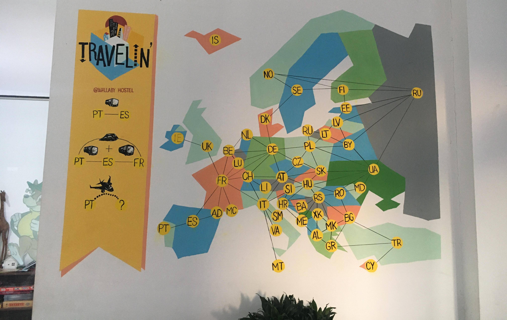

Leave all cups/balls alone until after both balls thrown
Throw a ball in a cup- Drink 1 cup
Bounce a ball into a cup- Drink 2 cups
2 balls in 2 cups- Drink 2 cups and balls back
2 balls in same cup- Drink 3 cups and balls back
Get ball back before it hits the floor- Trick shot (covering eyes or shooting with wrong hand does not count)
Cleanly catch overthrown ball one-handed- Other team drinks (not last cup) or you replace a cup
Reracks- 10-cup game gets 2 per team, 6-cup game gets 1 per team
Redemption- Each member of the losing team shoots one at a time until they miss. If they get all remaining cups then each team starts with 3 cups and plays on (original winners start)
Lose while opponent still has a full rack- Pants off around the building or 3 laps around the table
There are no other rules. Sorry North Americans

Travelin
Rules
2-5 players, 10 minutes per player
Country card- Card with country, has points in a yellow circle in the top-left.
Action card- , have a blue arrow in the top left.
Special card- , have a red map-marker icon in the top left.
Each player gets dealt 8 cards face-down, and 3 cards placed face-up in the middle (the common cards). Players without at least 1 country card put their hand in the discard pile and get dealt 8 new cards.
Each player starts by picking their first travel point by choosing 1 country card from their hand to place face-down in front of them. Once everyone places a card, reveal all the picked cards. The player with the lowest-point country goes first, with ties settled by who was born furthest from here.
Distances Reference
Auckland 17796km
Melbourne 15319km
Adelaide 14669km
Perth 12668km
Santiago 12359km
San Francisco 10568km
Bangkok 8229km
New York 7541km
Lisbon 2500km
London 2017km
At the start of a turn, players can either draw 1 card from the 3 common cards, the top discarded card, or 2 cards from the deck.
The player may then take 1 action during their turn, either by playing an action card or by using a played country card (used country cards get turned upside down and are then unuseable).
Action cards such as a bus/train allow players to reach countries. To play a country card, it must be connected to a player's last-played country card
To end a turn, the player discards 1 card from their hand face-up into the discard pile.
Players must always have 1 played country card, so certain actions such as Russian Gambit or Arrogant Backpacker cannot be used on players with only 1 country.
Once a player has 5 played country cards, the game ends. That player gets a 5-point bonus.
Player with the most points at the end wins. Ties settled by whoever travelled to the most countries during the game.

 Distances Reference
Distances Reference